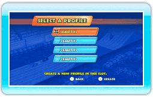
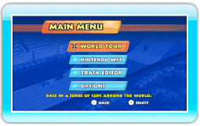

9 |
Het spel starten |
 |
|
De eerste keer dat je het spel speelt, moet je een profiel aanma-ken door een leeg (EMPTY) vak te kiezen en je profielnaam in te voeren. Als er al een profiel is aangemaakt, kun je het profiel kiezen dat je wilt gebruiken.
Opmerking: selecteer een profiel en druk op
 om het profielmenu weer te geven. Hier kun je je profielnaam veranderen of wissen. Let op: eenmaal gewiste profielgegevens kunnen niet worden teruggehaald!
Als je een profiel hebt gekozen, wordt het hoofdmenu weergegeven.
|
 |
 |
 |